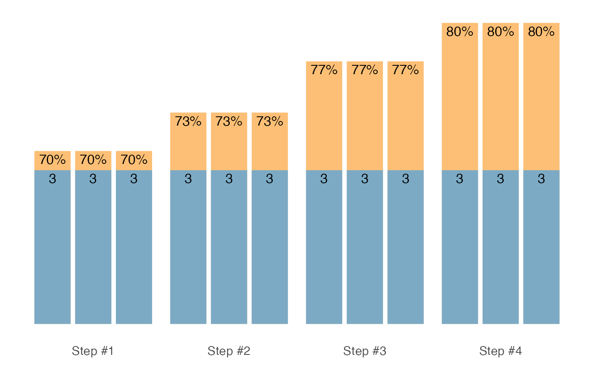
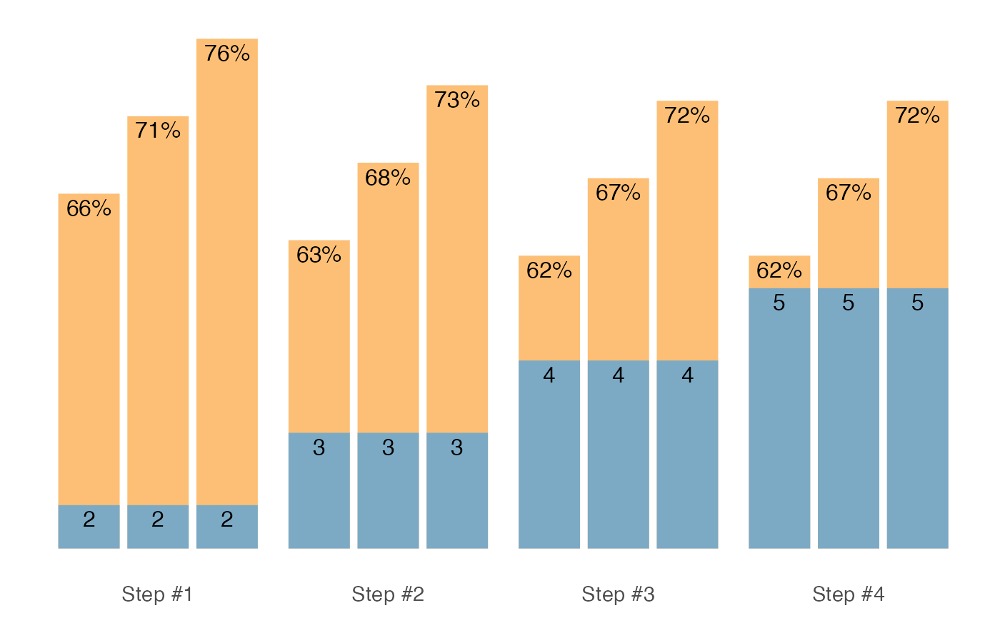
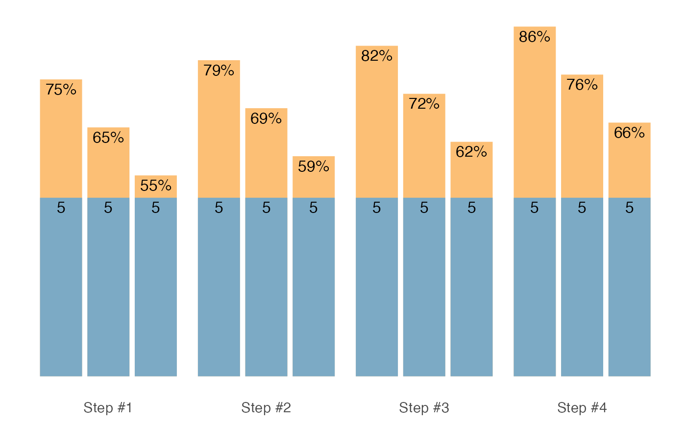
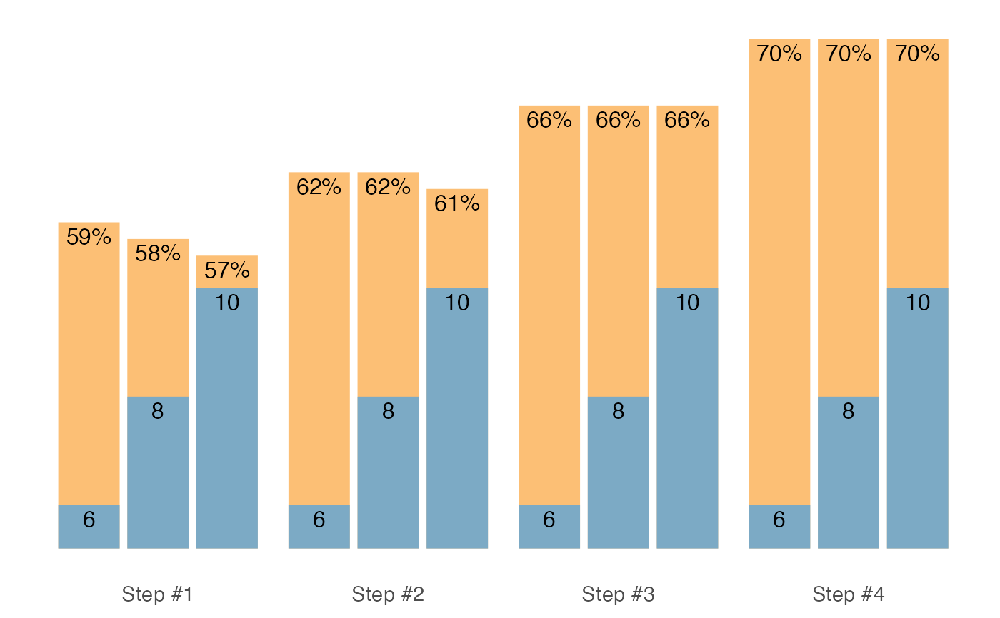
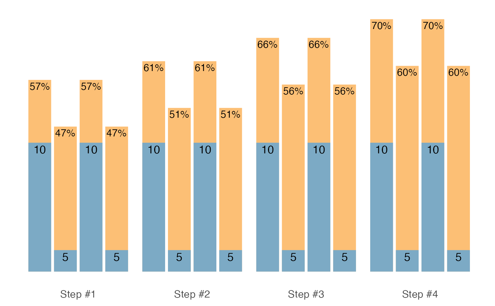
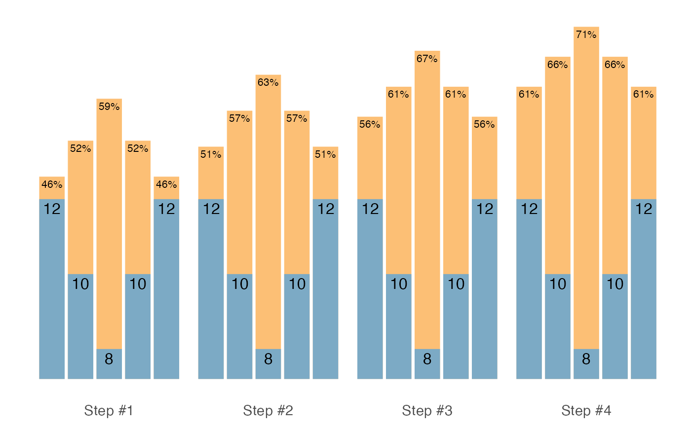
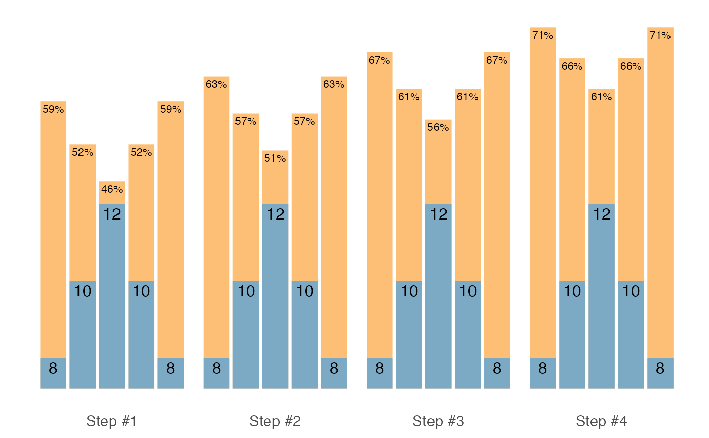
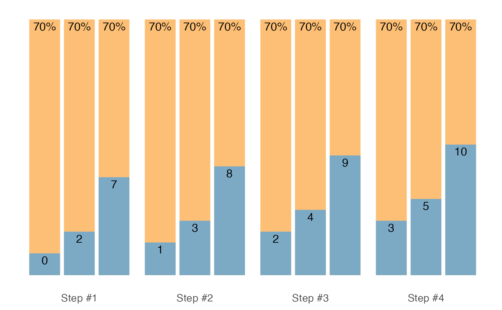
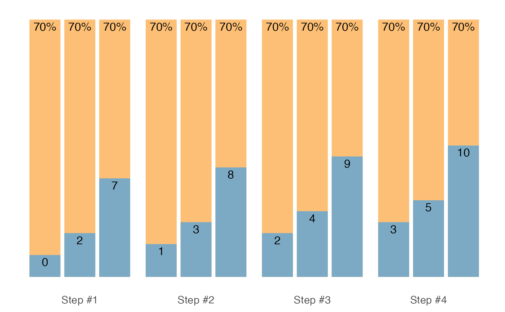

Set and Rep Schemes
scheme_generic(
reps,
adjustment,
vertical_planning,
vertical_planning_control = list(),
progression_table,
progression_table_control = list()
)
scheme_wave(
reps = c(10, 8, 6),
adjustment = -rev((seq_along(reps) - 1) * 5)/100,
vertical_planning = vertical_constant,
vertical_planning_control = list(),
progression_table = progression_perc_drop,
progression_table_control = list(volume = "normal")
)
scheme_plateau(
reps = c(5, 5, 5),
vertical_planning = vertical_constant,
vertical_planning_control = list(),
progression_table = progression_perc_drop,
progression_table_control = list(volume = "normal")
)
scheme_step(
reps = c(5, 5, 5),
adjustment = -rev((seq_along(reps) - 1) * 10)/100,
vertical_planning = vertical_constant,
vertical_planning_control = list(),
progression_table = progression_perc_drop,
progression_table_control = list(volume = "intensive")
)
scheme_step_reverse(
reps = c(5, 5, 5),
adjustment = -((seq_along(reps) - 1) * 10)/100,
vertical_planning = vertical_constant,
vertical_planning_control = list(),
progression_table = progression_perc_drop,
progression_table_control = list(volume = "intensive")
)
scheme_wave_descending(
reps = c(6, 8, 10),
adjustment = -rev((seq_along(reps) - 1) * 5)/100,
vertical_planning = vertical_constant,
vertical_planning_control = list(),
progression_table = progression_perc_drop,
progression_table_control = list(volume = "normal")
)
scheme_light_heavy(
reps = c(10, 5, 10, 5),
adjustment = c(-0.1, 0)[(seq_along(reps)%%2) + 1],
vertical_planning = vertical_constant,
vertical_planning_control = list(),
progression_table = progression_perc_drop,
progression_table_control = list(volume = "normal")
)
scheme_pyramid(
reps = c(12, 10, 8, 10, 12),
adjustment = 0,
vertical_planning = vertical_constant,
vertical_planning_control = list(),
progression_table = progression_perc_drop,
progression_table_control = list(volume = "extensive")
)
scheme_pyramid_reverse(
reps = c(8, 10, 12, 10, 8),
adjustment = 0,
vertical_planning = vertical_constant,
vertical_planning_control = list(),
progression_table = progression_perc_drop,
progression_table_control = list(volume = "extensive")
)
scheme_rep_acc(
reps = c(10, 10, 10),
adjustment = 0,
vertical_planning_control = list(step = rep(0, 4)),
progression_table = progression_perc_drop,
progression_table_control = list(volume = "normal")
)
scheme_ladder(
reps = c(3, 5, 10),
adjustment = 0,
vertical_planning = vertical_constant,
vertical_planning_control = list(),
progression_table = progression_perc_drop,
progression_table_control = list(volume = "normal")
)Arguments
- reps
Numeric vector indicating reps prescription
- adjustment
Numeric vector indicating adjustments. Forwarded to
progression_table. If theprogression_tableisprogression_RIR_increment,adjustmentwill be done using RIR. On the other hand, ifprogression_perc_dropis used,adjustmentwill be done using 1RM percentage- vertical_planning
Vertical planning function. Default is
vertical_linear- vertical_planning_control
Arguments forwarded to the
vertical_planningfunction- progression_table
Progression table function. Default is
progression_RIR_increment- progression_table_control
Arguments forwarded to the
progression_tablefunction
Value
Data frame with the following columns: reps, index, step,
adjustment, and perc_1RM.
Functions
scheme_generic(): Generic set and rep scheme.scheme_genericis called in all other set and rep schemes - only the default parameters differ to make easier and quicker schemes writing and groupingsscheme_wave(): Wave set and rep schemescheme_plateau(): Plateau set and rep schemescheme_step(): Step set and rep schemescheme_step_reverse(): Reverse Step set and rep schemescheme_wave_descending(): Descending Wave set and rep schemescheme_light_heavy(): Light-Heavy set and rep schemescheme_pyramid(): Pyramid set and rep schemescheme_pyramid_reverse(): Reverse Pyramid set and rep schemescheme_rep_acc(): Rep Accumulation set and rep schemescheme_ladder(): Ladder set and rep scheme
Examples
scheme_generic(
reps = c(8, 6, 4, 8, 6, 4),
# Adjusting using lower %1RM (RIR Increment method used)
adjustment = c(4, 2, 0, 6, 4, 2),
vertical_planning = vertical_linear,
vertical_planning_control = list(reps_change = c(0, -2, -4)),
progression_table = progression_RIR_increment,
progression_table_control = list(volume = "extensive")
)
#> reps index step adjustment perc_1RM
#> 1 8 1 -2 11.818182 0.6024294
#> 2 6 1 -2 8.727273 0.6709526
#> 3 4 1 -2 5.636364 0.7570648
#> 4 8 1 -2 13.818182 0.5791912
#> 5 6 1 -2 10.727273 0.6422533
#> 6 4 1 -2 7.636364 0.7207254
#> 7 6 2 -1 9.272727 0.6628742
#> 8 4 2 -1 6.363636 0.7434341
#> 9 2 2 -1 3.454545 0.8462840
#> 10 6 2 -1 11.272727 0.6348473
#> 11 4 2 -1 8.363636 0.7083612
#> 12 2 2 -1 5.454545 0.8011303
#> 13 4 3 0 7.090909 0.7302856
#> 14 2 3 0 4.363636 0.8251444
#> 15 0 3 0 1.636364 0.9483249
#> 16 4 3 0 9.090909 0.6964141
#> 17 2 3 0 6.363636 0.7821610
#> 18 0 3 0 3.636364 0.8919883
# Wave set and rep schemes
# --------------------------
scheme_wave()
#> reps index step adjustment perc_1RM
#> 1 10 1 -3 -0.28181818 0.4683694
#> 2 8 1 -3 -0.21363636 0.5760036
#> 3 6 1 -3 -0.14545455 0.6880177
#> 4 10 2 -2 -0.23636364 0.5138239
#> 5 8 2 -2 -0.17272727 0.6169127
#> 6 6 2 -2 -0.10909091 0.7243813
#> 7 10 3 -1 -0.19090909 0.5592785
#> 8 8 3 -1 -0.13181818 0.6578217
#> 9 6 3 -1 -0.07272727 0.7607450
#> 10 10 4 0 -0.14545455 0.6047330
#> 11 8 4 0 -0.09090909 0.6987308
#> 12 6 4 0 -0.03636364 0.7971086
scheme_wave(
reps = c(8, 6, 4, 8, 6, 4),
# Second wave with higher intensity
adjustment = c(-0.25, -0.15, 0.05, -0.2, -0.1, 0),
vertical_planning = vertical_block,
progression_table = progression_perc_drop,
progression_table_control = list(type = "ballistic")
)
#> reps index step adjustment perc_1RM
#> 1 8 1 -2 -0.4125 0.2399008
#> 2 6 1 -2 -0.2875 0.4269899
#> 3 4 1 -2 -0.0625 0.7271399
#> 4 8 1 -2 -0.3625 0.2899008
#> 5 6 1 -2 -0.2375 0.4769899
#> 6 4 1 -2 -0.1125 0.6771399
#> 7 8 2 -1 -0.3525 0.2999008
#> 8 6 2 -1 -0.2375 0.4769899
#> 9 4 2 -1 -0.0225 0.7671399
#> 10 8 2 -1 -0.3025 0.3499008
#> 11 6 2 -1 -0.1875 0.5269899
#> 12 4 2 -1 -0.0725 0.7171399
#> 13 8 3 0 -0.2925 0.3599008
#> 14 6 3 0 -0.1875 0.5269899
#> 15 4 3 0 0.0175 0.8071399
#> 16 8 3 0 -0.2425 0.4099008
#> 17 6 3 0 -0.1375 0.5769899
#> 18 4 3 0 -0.0325 0.7571399
#> 19 8 4 -3 -0.4725 0.1799008
#> 20 6 4 -3 -0.3375 0.3769899
#> 21 4 4 -3 -0.1025 0.6871399
#> 22 8 4 -3 -0.4225 0.2299008
#> 23 6 4 -3 -0.2875 0.4269899
#> 24 4 4 -3 -0.1525 0.6371399
# Adjusted second wave
# and using 3 steps progression
scheme_wave(
reps = c(8, 6, 4, 8, 6, 4),
# Adjusting using lower %1RM (progression_perc_drop method used)
adjustment = c(0, 0, 0, -0.1, -0.1, -0.1),
vertical_planning = vertical_linear,
vertical_planning_control = list(reps_change = c(0, -2, -4)),
progression_table = progression_perc_drop,
progression_table_control = list(volume = "extensive")
)
#> reps index step adjustment perc_1RM
#> 1 8 1 -2 -0.16363636 0.6260036
#> 2 6 1 -2 -0.14545455 0.6880177
#> 3 4 1 -2 -0.12727273 0.7551840
#> 4 8 1 -2 -0.26363636 0.5260036
#> 5 6 1 -2 -0.24545455 0.5880177
#> 6 4 1 -2 -0.22727273 0.6551840
#> 7 6 2 -1 -0.10909091 0.7243813
#> 8 4 2 -1 -0.09545455 0.7870022
#> 9 2 2 -1 -0.08181818 0.8557404
#> 10 6 2 -1 -0.20909091 0.6243813
#> 11 4 2 -1 -0.19545455 0.6870022
#> 12 2 2 -1 -0.18181818 0.7557404
#> 13 4 3 0 -0.06363636 0.8188204
#> 14 2 3 0 -0.05454545 0.8830131
#> 15 0 3 0 -0.04545455 0.9545455
#> 16 4 3 0 -0.16363636 0.7188204
#> 17 2 3 0 -0.15454545 0.7830131
#> 18 0 3 0 -0.14545455 0.8545455
# Adjusted using RIR inc
# This time we adjust first wave as well, first two sets easier
scheme <- scheme_wave(
reps = c(8, 6, 4, 8, 6, 4),
# Adjusting using lower %1RM (RIR Increment method used)
adjustment = c(4, 2, 0, 6, 4, 2),
vertical_planning = vertical_linear,
vertical_planning_control = list(reps_change = c(0, -2, -4)),
progression_table = progression_RIR_increment,
progression_table_control = list(volume = "extensive")
)
plot(scheme)
# Plateau set and rep schemes
# --------------------------
scheme_plateau()
#> reps index step adjustment perc_1RM
#> 1 5 1 -3 -0.13636364 0.7209017
#> 2 5 1 -3 -0.13636364 0.7209017
#> 3 5 1 -3 -0.13636364 0.7209017
#> 4 5 2 -2 -0.10227273 0.7549926
#> 5 5 2 -2 -0.10227273 0.7549926
#> 6 5 2 -2 -0.10227273 0.7549926
#> 7 5 3 -1 -0.06818182 0.7890835
#> 8 5 3 -1 -0.06818182 0.7890835
#> 9 5 3 -1 -0.06818182 0.7890835
#> 10 5 4 0 -0.03409091 0.8231744
#> 11 5 4 0 -0.03409091 0.8231744
#> 12 5 4 0 -0.03409091 0.8231744
scheme <- scheme_plateau(
reps = c(3, 3, 3),
progression_table_control = list(type = "ballistic")
)
plot(scheme)

# Step set and rep schemes
# --------------------------
scheme_step()
#> reps index step adjustment perc_1RM
#> 1 5 1 -3 -0.30227273 0.5549926
#> 2 5 1 -3 -0.20227273 0.6549926
#> 3 5 1 -3 -0.10227273 0.7549926
#> 4 5 2 -2 -0.26818182 0.5890835
#> 5 5 2 -2 -0.16818182 0.6890835
#> 6 5 2 -2 -0.06818182 0.7890835
#> 7 5 3 -1 -0.23409091 0.6231744
#> 8 5 3 -1 -0.13409091 0.7231744
#> 9 5 3 -1 -0.03409091 0.8231744
#> 10 5 4 0 -0.20000000 0.6572653
#> 11 5 4 0 -0.10000000 0.7572653
#> 12 5 4 0 0.00000000 0.8572653
scheme <- scheme_step(
reps = c(2, 2, 2),
adjustment = c(-0.1, -0.05, 0),
vertical_planning = vertical_linear_reverse,
progression_table_control = list(type = "ballistic")
)
plot(scheme)

# Reverse Step set and rep schemes
#- -------------------------
scheme <- scheme_step_reverse()
plot(scheme)

# Descending Wave set and rep schemes
# --------------------------
scheme <- scheme_wave_descending()
plot(scheme)

# Light-Heavy set and rep schemes
# --------------------------
scheme <- scheme_light_heavy()
plot(scheme)

# Pyramid set and rep schemes
# --------------------------
scheme <- scheme_pyramid()
plot(scheme)

# Reverse Pyramid set and rep schemes
# --------------------------
scheme <- scheme_pyramid_reverse()
plot(scheme)

# Rep Accumulation set and rep schemes
# --------------------------
scheme_rep_acc()
#> reps index step adjustment perc_1RM
#> 1 7 1 0 -0.04545455 0.704733
#> 2 7 1 0 -0.04545455 0.704733
#> 3 7 1 0 -0.04545455 0.704733
#> 4 8 2 0 -0.04545455 0.704733
#> 5 8 2 0 -0.04545455 0.704733
#> 6 8 2 0 -0.04545455 0.704733
#> 7 9 3 0 -0.04545455 0.704733
#> 8 9 3 0 -0.04545455 0.704733
#> 9 9 3 0 -0.04545455 0.704733
#> 10 10 4 0 -0.04545455 0.704733
#> 11 10 4 0 -0.04545455 0.704733
#> 12 10 4 0 -0.04545455 0.704733
# Generate Wave scheme with rep accumulation vertical progression
# This functions doesn't allow you to use different vertical planning
# options
scheme <- scheme_rep_acc(reps = c(10, 8, 6), adjustment = c(-0.1, -0.05, 0))
plot(scheme)
# Other options is to use `.vertical_rep_accumulation.post()` and
# apply it after
# The default vertical progression is `vertical_const()`
scheme <- scheme_wave(reps = c(10, 8, 6), adjustment = c(-0.1, -0.05, 0))
.vertical_rep_accumulation.post(scheme)
#> reps index step adjustment perc_1RM
#> 1 7 1 0 -0.14545455 0.6047330
#> 2 5 1 0 -0.09090909 0.6987308
#> 3 3 1 0 -0.03636364 0.7971086
#> 4 8 2 0 -0.14545455 0.6047330
#> 5 6 2 0 -0.09090909 0.6987308
#> 6 4 2 0 -0.03636364 0.7971086
#> 7 9 3 0 -0.14545455 0.6047330
#> 8 7 3 0 -0.09090909 0.6987308
#> 9 5 3 0 -0.03636364 0.7971086
#> 10 10 4 0 -0.14545455 0.6047330
#> 11 8 4 0 -0.09090909 0.6987308
#> 12 6 4 0 -0.03636364 0.7971086
# We can also create "undulating" rep decrements
.vertical_rep_accumulation.post(
scheme,
rep_decrement = c(-3, -1, -2, 0)
)
#> reps index step adjustment perc_1RM
#> 1 7 1 0 -0.14545455 0.6047330
#> 2 5 1 0 -0.09090909 0.6987308
#> 3 3 1 0 -0.03636364 0.7971086
#> 4 9 2 0 -0.14545455 0.6047330
#> 5 7 2 0 -0.09090909 0.6987308
#> 6 5 2 0 -0.03636364 0.7971086
#> 7 8 3 0 -0.14545455 0.6047330
#> 8 6 3 0 -0.09090909 0.6987308
#> 9 4 3 0 -0.03636364 0.7971086
#> 10 10 4 0 -0.14545455 0.6047330
#> 11 8 4 0 -0.09090909 0.6987308
#> 12 6 4 0 -0.03636364 0.7971086
# `scheme_rep_acc` will not allow you to generate `scheme_ladder()`
# and `scheme_scheme_light_heavy()`
# You must use `.vertical_rep_accumulation.post()` to do so
scheme <- scheme_ladder()
scheme <- .vertical_rep_accumulation.post(scheme)
plot(scheme)
 # Please note that reps < 1 are removed. If you do not want this,
# use `remove_reps = FALSE` parameter
.vertical_rep_accumulation.post(scheme, remove_reps = FALSE)
#> reps index step adjustment perc_1RM
#> 1 -1 1 0 -0.04545455 0.704733
#> 2 4 1 0 -0.04545455 0.704733
#> 3 -2 1 0 -0.04545455 0.704733
#> 4 0 1 0 -0.04545455 0.704733
#> 5 5 1 0 -0.04545455 0.704733
#> 6 -1 1 0 -0.04545455 0.704733
#> 7 1 1 0 -0.04545455 0.704733
#> 8 6 1 0 -0.04545455 0.704733
#> 9 0 1 0 -0.04545455 0.704733
#> 10 2 1 0 -0.04545455 0.704733
#> 11 7 1 0 -0.04545455 0.704733
#> 12 0 2 0 -0.04545455 0.704733
#> 13 5 2 0 -0.04545455 0.704733
#> 14 -1 2 0 -0.04545455 0.704733
#> 15 1 2 0 -0.04545455 0.704733
#> 16 6 2 0 -0.04545455 0.704733
#> 17 0 2 0 -0.04545455 0.704733
#> 18 2 2 0 -0.04545455 0.704733
#> 19 7 2 0 -0.04545455 0.704733
#> 20 1 2 0 -0.04545455 0.704733
#> 21 3 2 0 -0.04545455 0.704733
#> 22 8 2 0 -0.04545455 0.704733
#> 23 1 3 0 -0.04545455 0.704733
#> 24 6 3 0 -0.04545455 0.704733
#> 25 0 3 0 -0.04545455 0.704733
#> 26 2 3 0 -0.04545455 0.704733
#> 27 7 3 0 -0.04545455 0.704733
#> 28 1 3 0 -0.04545455 0.704733
#> 29 3 3 0 -0.04545455 0.704733
#> 30 8 3 0 -0.04545455 0.704733
#> 31 2 3 0 -0.04545455 0.704733
#> 32 4 3 0 -0.04545455 0.704733
#> 33 9 3 0 -0.04545455 0.704733
#> 34 2 4 0 -0.04545455 0.704733
#> 35 7 4 0 -0.04545455 0.704733
#> 36 1 4 0 -0.04545455 0.704733
#> 37 3 4 0 -0.04545455 0.704733
#> 38 8 4 0 -0.04545455 0.704733
#> 39 2 4 0 -0.04545455 0.704733
#> 40 4 4 0 -0.04545455 0.704733
#> 41 9 4 0 -0.04545455 0.704733
#> 42 3 4 0 -0.04545455 0.704733
#> 43 5 4 0 -0.04545455 0.704733
#> 44 10 4 0 -0.04545455 0.704733
# Ladder set and rep schemes
# --------------------------
scheme <- scheme_ladder()
plot(scheme)

# Please note that reps < 1 are removed. If you do not want this,
# use `remove_reps = FALSE` parameter
.vertical_rep_accumulation.post(scheme, remove_reps = FALSE)
#> reps index step adjustment perc_1RM
#> 1 -1 1 0 -0.04545455 0.704733
#> 2 4 1 0 -0.04545455 0.704733
#> 3 -2 1 0 -0.04545455 0.704733
#> 4 0 1 0 -0.04545455 0.704733
#> 5 5 1 0 -0.04545455 0.704733
#> 6 -1 1 0 -0.04545455 0.704733
#> 7 1 1 0 -0.04545455 0.704733
#> 8 6 1 0 -0.04545455 0.704733
#> 9 0 1 0 -0.04545455 0.704733
#> 10 2 1 0 -0.04545455 0.704733
#> 11 7 1 0 -0.04545455 0.704733
#> 12 0 2 0 -0.04545455 0.704733
#> 13 5 2 0 -0.04545455 0.704733
#> 14 -1 2 0 -0.04545455 0.704733
#> 15 1 2 0 -0.04545455 0.704733
#> 16 6 2 0 -0.04545455 0.704733
#> 17 0 2 0 -0.04545455 0.704733
#> 18 2 2 0 -0.04545455 0.704733
#> 19 7 2 0 -0.04545455 0.704733
#> 20 1 2 0 -0.04545455 0.704733
#> 21 3 2 0 -0.04545455 0.704733
#> 22 8 2 0 -0.04545455 0.704733
#> 23 1 3 0 -0.04545455 0.704733
#> 24 6 3 0 -0.04545455 0.704733
#> 25 0 3 0 -0.04545455 0.704733
#> 26 2 3 0 -0.04545455 0.704733
#> 27 7 3 0 -0.04545455 0.704733
#> 28 1 3 0 -0.04545455 0.704733
#> 29 3 3 0 -0.04545455 0.704733
#> 30 8 3 0 -0.04545455 0.704733
#> 31 2 3 0 -0.04545455 0.704733
#> 32 4 3 0 -0.04545455 0.704733
#> 33 9 3 0 -0.04545455 0.704733
#> 34 2 4 0 -0.04545455 0.704733
#> 35 7 4 0 -0.04545455 0.704733
#> 36 1 4 0 -0.04545455 0.704733
#> 37 3 4 0 -0.04545455 0.704733
#> 38 8 4 0 -0.04545455 0.704733
#> 39 2 4 0 -0.04545455 0.704733
#> 40 4 4 0 -0.04545455 0.704733
#> 41 9 4 0 -0.04545455 0.704733
#> 42 3 4 0 -0.04545455 0.704733
#> 43 5 4 0 -0.04545455 0.704733
#> 44 10 4 0 -0.04545455 0.704733
# Ladder set and rep schemes
# --------------------------
scheme <- scheme_ladder()
plot(scheme)
